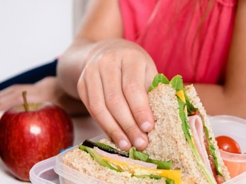

Welcome to
El Plato para Comer Saludable (Spanish) | The Nutrition Source | Harvard T.H. Chan School of Public Health
2021.06.02 14:34Menu Close Menu Skip to content Information For: Prospective Students Current Students Alumni Faculty & Staff Friends & Supporters A to Z index Harvard T.H. Chan School of Public Health Email People Departments Calendar Careers my.harvard Support our urgent COVID-19 work About Faculty & Research Admissions & Aid Academics Executive/Continuing Ed News The Nutrition Source Harvard T.H. Chan School of Public Health The Nutrition Source Healthy Eating Plate Healthy Eating Plate Translations El Plato para Comer Saludable (Spanish) The Nutrition Source Menu Home Nutrition News What Should I Eat? Healthy Eating Plate & Pyramid Healthy Eating Plate Translations Kid’s Healthy Eating Plate Whole Grains Protein Vegetables and Fruits Fats and Cholesterol Types of Fat Cholesterol Dietary Fat and Disease Vitamins and Minerals Healthy Drinks Water Other Healthy Beverage Options Drinks to Consume in Moderation Sugary Drinks Sports Drinks Energy Drinks Public Health Concerns: Sugary Drinks Low-Calorie Sweeteners Salt and Sodium Take Action: How to Reduce Your Intake Public Health Concerns Carbohydrates Carbohydrates and Blood Sugar Fiber Added Sugar in the Diet Low-Carbohydrate Diets Sustainability Plate and the Planet Food Waste Healthy Weight Measuring Body Fat The Best Diet: Quality Counts Healthy Dietary Styles Diet Reviews Staying Active Active Communities Stress Sleep Disease Prevention Heart Disease Prevention Diabetes Prevention Cancer Prevention Precision Nutrition Nutrition and Immunity Recipes Home Cooking Food Service Resources Food Features Additional Resources About FAQ Contact
El Plato para Comer Saludable (Spanish)
El Plato para Comer Saludable , creado por expertos en nutrición de la Escuela de Salud Pública de Harvard y los editores en Publicaciones de Salud de Harvard, es una guía para crear comidas saludables y balanceadas – ya sean servidas en un plato o empacadas para llevar en la merienda o almuerzo. Coloque una copia en su refrigerador/nevera para que recuerde a diario preparar comidas saludables y balanceadas.
Haga que la mayoría de sus comidas sean vegetales y frutas – ½ de su plato:Intente incorporar color y variedad, y recuerde que las patatas (papas) no cuentan como un vegetal en El Plato para Comer Saludable por su efecto negativo en la azúcar en la sangre.
Escoja granos integrales – ¼ de su plato:Granos integrales e intactos – trigo integral, cebada, granos de trigo, quínoa, avena, arroz integral, y las comidas preparadas con estos ingredientes como pasta de trigo integral – tienen un efecto más moderado en la azúcar en la sangre y la insulina que el pan blanco, arroz blanco, y otros granos refinados.
El valor de la proteína – ¼ de su plato:Pescado, pollo, legumbres (habichuelas/leguminosas/frijoles), y nueces son fuentes de proteínas saludables y versátiles – pueden ser mezcladas en ensaladas, y combinan bien con vegetales en un plato. Limite las carnes rojas, y evite carnes procesadas como tocineta (“bacon”) y embuditos (salchichas).
Aceites de plantas saludables – en moderación:Escoja aceites vegetales saludables como oliva, canola, soya, maíz, girasol, maní (cacahuate), u otros, y evite los aceites parcialmente hidrogenados, los cuales contienen las grasas trans no saludables. Recuerde que “bajo en grasa” no significa “saludable”.
Tome agua, café, o té:Omita las bebidas azucaradas, limite la leche y productos lácteos a una o dos porciones al día, y limite el jugo (zumo) a un vaso pequeño al día.
Manténganse activo:La figura roja corriendo sobre el mantel de El Plato para Comer Saludable es un recordatorio de que mantenerse activo también es importante en el control de peso.
El mensaje principal de El Plato para Comer Saludable es enfocarse en la calidad de la dieta.
El tipo de carbohidratos en la dieta es más importante que la cantidad de carbohidratos en la dieta, porque algunas fuentes de carbohidratos – como los vegetales (otros que no sean patatas/papas), frutas, granos integrales, y legumbres (habichuelas/leguminosas/frijoles) – son más saludables que otros. El Plato para Comer Saludable también aconseja a los consumidores a evitar las bebidas azucaradas, una fuente principal de calorías – usualmente con poco valor nutricional. El Plato para Comer Saludable anima a los consumidores a usar aceites saludables, y no establece un máximo en el porciento de calorías de fuentes saludables de grasa que las personas deben obtener cada día. Términos de Uso para El Plato para Comer Saludable
Autorizamos permiso para usar la imagen de El Plato para Comer Saludable de acuerdo con los siguientes términos y condiciones:
Translation assistance provided by Josiemer Mattei, PhD, MPH
Terms of Use
The contents of this website are for educational purposes and are not intended to offer personal medical advice. You should seek the advice of your physician or other qualified health provider with any questions you may have regarding a medical condition. Never disregard professional medical advice or delay in seeking it because of something you have read on this website. The Nutrition Source does not recommend or endorse any products.
Para Niños
A monthly update filled with nutrition news and tips from Harvard experts—all designed to help you eat healthier. Sign up here .
Explore the downloadable guide with tips and strategies for healthy eating and healthy living.
Healthy Eating Plate Translations
طبق الأكل الصحي (Arabic) Osasungarri Jateko Platera (Basque) Tanjir Zdrave Ishrane (Bosnian) El Plat Saludable (Catalan) 健康饮食餐盘 (Chinese Simplified) 健康飲食餐盤 (Chinese Traditional) Tanjur Zdrave Prehrane (Croatian) Den Sunde Tallerken (Danish) Gezonde Voeding Bord (Dutch) Healthy Eating Plate (English) بشقاب غذای سالم (Farsi) L’Assiette Santé (French – Canada) Der Gesunde Teller (German) Πιάτο Υγιεινής Διατροφής (Greek) Plat Manje ki Bon pou Lasante (Haitian Creole) Ingantaccan Tsarin Abinci (Hausa) स्वस्थ भोजन की थाली (Hindi) Efere Iri Ihe Na-Enye Ahụike (Igbo) Il Piatto del Mangiar Sano (Italian) 健康的な食事プレート (Japanese) 한 끼 건강식 (Korean) ЭРҮҮЛ ХООЛЛОХ ТАВАГ (Mongolian) Talerz Zdrowego Odżywiania (Polish) Prato: Alimentação Saudável (Portuguese) Tарелка Здорового Питания (Russian) Tanjir Zdrave Ishrane (Serbian) El Plato para Comer Saludable (Spanish) El Plato para Comer Saludable (Spanish Spain) Sahani ya Mlo Unaofaa (Swahili) En Hälsosam Mattallrik (Swedish) Sağlıklı Yemek Tabağı (Turkish) Dĩa Thức Ăn Bổ Dưỡng (Vietnamese) Àwo Oúnjẹ Ìlera (Yoruba)The Nutrition Source on Twitter
RT @HarvardChanSPH : In a letter to the editor of the @nytimes , S. Bryn Austin of @HarvardSTRIPED says eating disorders have risen among tee… RT @HarvardPRC : Implementation of a policy in Wisconsin to improve #childhealth would lead to 2,060 kids drinking fewer sugary drinks in ou… Our Department of Nutrition is seeking applicants for an Assistant/Associate Professor of Nutritional Clinical Tria… https://t.co/hn5jkyBttq RT @CHOICESproject : The CHOICES Project is on LinkedIn! Do you work to promote #healthyeating & #activeliving? Follow our page to stay in t… RT @HarvardChanSPH : Looking for some good news this #EarthDay? Subscribe to the Climate Optimist from @HarvardCCHANGE https://t.co/LPswj7LY … Information For: Prospective Students Current Students Alumni Faculty & Staff Friends & Supporters About Key Facts Renaming the School Office of the Dean Location and Facilities Administrative Offices Contact Us Faculty and Research Faculty and Researcher Directory Academic Departments, Divisions and Centers International Research Postdoctoral Research Fellows Office of Faculty Affairs Faculty Searches Office of Diversity and Inclusion Admissions & Aid Why Harvard Chan Degree Programs Non-Degree Programs Financial Aid Student Experience Career Advancement Apply Academics Academic Departments Divisions Research Centers Flagship Initiatives International Research Research Administration and Support Degree Programs Fellowships and Residencies Summer Programs Continuing Professional Education Interdisciplinary Concentrations Academic Calendar Harvard Chan Viewbook Executive/Continuing Ed Program Offerings Custom Programs Request Information News and Resources About ECPE Contact News Featured News Press Releases Student Stories In the News Newsletters HPH Magazine Why Public Health? Harvard T.H. Chan School of Public Health 677 Huntington Avenue Boston , MA 02115 +1 (617) 495‑1000 Twitter Facebook YouTube LinkedIn Instagram iTunes Harvard Chan Home Contact Us Harvard University Home Make a Gift Privacy Policy Report Copyright Violation Accessibility Copyright © 2021 The President and Fellows of Harvard CollegeLoading Comments Comment ×
